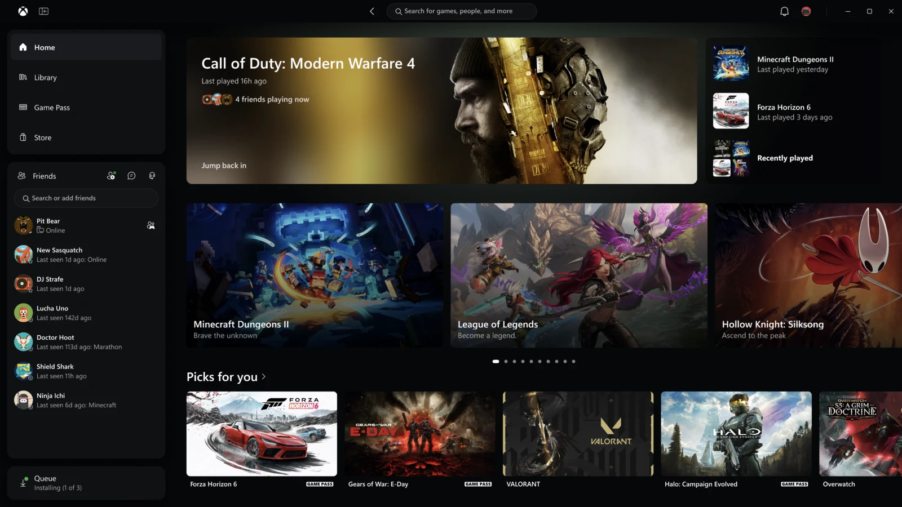

Gaming · Field note 062
Xbox’s PC app refresh puts speed and simpler navigation first
Insider testing starts November 5, while the updated cloud interface expands over the coming weeks.

Microsoft began rolling out a redesigned Xbox PC app to Xbox Insiders on November 5, 2026, alongside plans to expand its refreshed cloud gaming interface.
The company says the PC app can launch up to 60 percent faster, with major pages loading up to 50 percent faster. Those figures come from Microsoft’s testing and will vary with the device, connection, and configuration.
The changes also bring library filters, easier game organization, and friends into the main navigation. Search spans games, installed titles, add-ons, and people.
On the web, the cloud library brings together playable owned games and Game Pass titles. Larger screens gain a desktop mode, while appearance options include light, dark, and five high-contrast themes.
The web refresh reaches more players over the next few weeks. Related navigation and design updates are also beginning to reach supported TVs and VR headsets.